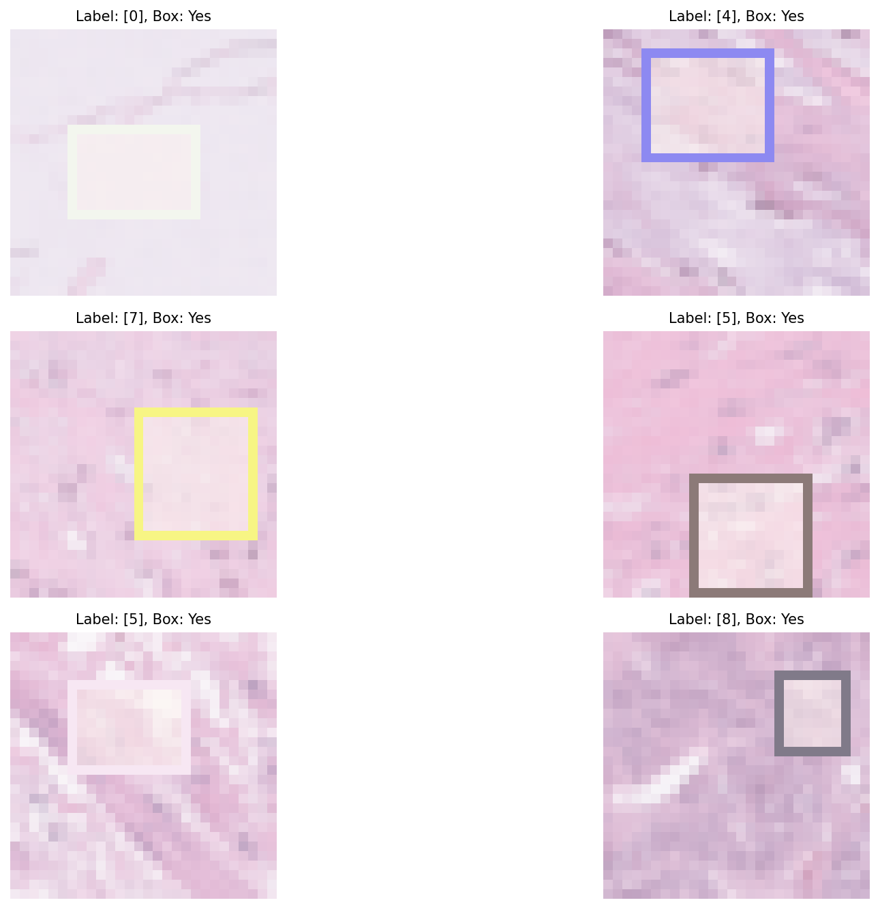

Deep Learning · PyTorch
PathMNIST Deep Learning
Built CNN classifiers and a U-Net segmentation pipeline; implemented training/validation loops and ran ablations across architectures.
- Achieved ≥90% accuracy on PathMNIST classification
- Achieved ≥97% IoU on segmentation task
- Explored multiple architecture ablations